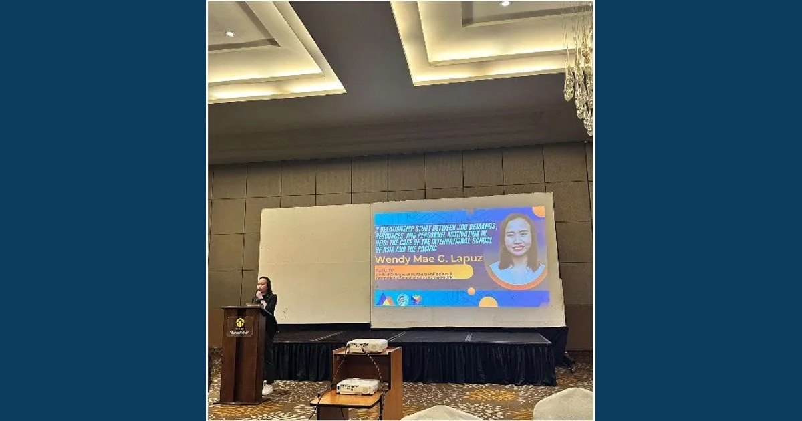

Wendy Mae G. Lapus Represents ISAP at Regional Data Festival

Ms. Lapus presented "A Relationship Study between Job Demands, Resources, and Personnel Motivation in HEIs: The Case of the International School of Asia and the Pacific" at the North Luzon Regional Data Festival held at Subic Bay Travelers Hotel and Event Center, Subic Bay Freeport Zone.
Read full article